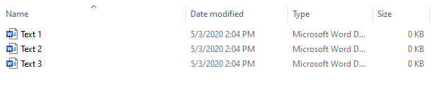

Upload a single set of multiple texts to be analyzed together.
Use the file explorer on your device to set up the folder structure, then import
into DocuScope for analysis.
-
Create a new folder for your project
-
Place all the text files to be analyzed in this folder

Do not include sub-folders, just the text files to be analyzed
-
Launch DocuScope and Load a Dictionary
-
Select
-
Navigate to the Corpus folder created in Step 1 and hit
Select
An output folder will automatically be created in the folder that
contains your corpus folder. A CSV file is generated for each level of the
dictionary.